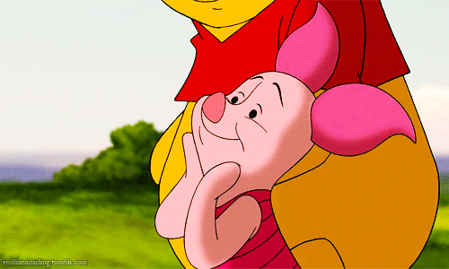

Piglet is another of the original stuffed toy animals of Christopher Robin Milne in the Winnie-the-Pooh books. Piglet is a very brave animal as supposed to his diminutive size and frame of a timid pink pig. Piglet stands barely at 10 inches tall and is always seen wearing a long pink striped shirt. His original address in the 100 Acre Wood was the Beech Tree, south of Pooh's house, 100 Acre Wood Southwest. But from the time Owl moved into his house, Piglet has started living with his best friend Winnie the Pooh. What he loves doing best is going on adventures with Pooh, he is quite fond of bright colors and especially balloons, and he even likes blowing dandelions. Haycorns are his favourite food. Every Tuesday Piglet spends his day at Christopher Robin’s house. The first thing that Piglet utters when he gets up in the morning is “I wonder what's going to happen exciting today?”.
